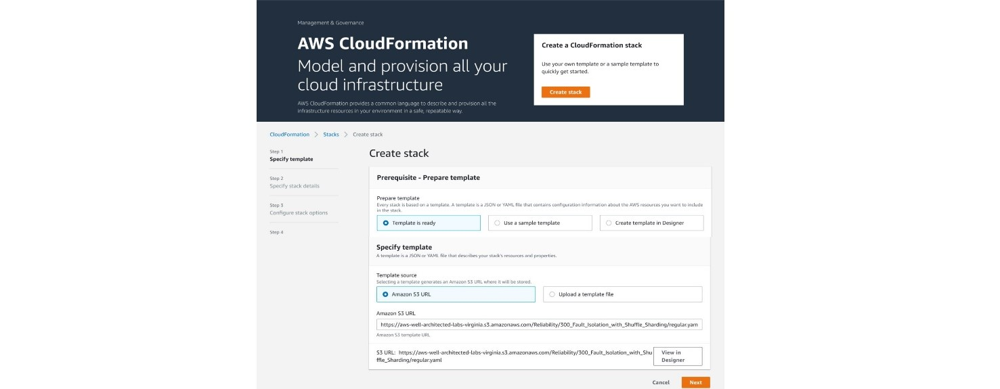

Fault Isolation With Shuffle Sharding
Fault Isolation With Shuffle Sharding; Shuffle sharding is simple, but powerful. It’s even more powerful than we first realized. We’ve used it over and over, and it’s become a core pattern that makes it possible for AWS to deliver cost-effective multi-tenant services that give each customer a single-tenant experience.
Create Stack

I begin by going to the AWS CloudFormation console and clicking on Create Stack. From the Prepare the template pane, I selected Template is ready From the Template source pane, I selected Amazon S3 URL. In the text box under Amazon S3 URL I inputted: https://aws-well-architected-labs- virginia.s3.amazonaws.com/Reliability/300_Fault_Isolation_with_Shuffle_Sharding/regular.yaml Once that was done I clicked on Next.